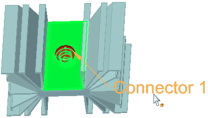

Create assembly connectors using the Auto command
Rather than selecting the individual faces to be connected using the Manual command, the Auto connector command lets you select whole components or all geometry in the model. It then automatically identifies the faces on these bodies that are within the specified search distance.
To add connectors to a thermal coupled study, which processes two types of studies in one solution, create the connectors in two passes. Select the Auto command to create all of the thermal connectors for the thermal study, and select the Auto command again to create all of the structural connectors for the structural study. It does not matter which connector set you create first.
-
Choose the Simulation tab→Connectors group→Auto connector command.

-
On the Auto command bar, from the Connector Type list, select the type of connector you want to apply between assembly faces.
The available options are based on whether you are creating a structural study, a thermal study, or a coupled study.
-
Glue
-
No Penetration
-
Thermal
-
Thermal Glue
For more information, see Glue and no penetration contact connectors and Thermal connectors.
-
-
(Optional) In the Search distance box on the command bar, type a new value for the maximum distance apart the faces can be for connectors to be created between them. In most cases, the default value is acceptable.
-
Select the model components or bodies by doing one of the following:
-
Click the Select All Components button
 to automatically select the faces on all component bodies that are within the specified
search distance of each other.
to automatically select the faces on all component bodies that are within the specified
search distance of each other. -
Select at least two component bodies in the model.
You can drag a box or use the Select tool, QuickPick, or the Selection Manager to select model geometry.
-
-
Do one of the following:
-
To accept the highlighted components and continue, click Accept
 .
. -
To add or remove components from the selection set, click Deselect
 , and then repeat step 4.
, and then repeat step 4.
The One Connector Per Component Pair option
 on the command bar is selected by default to reduce the number of connections created.
An over-constrained model may generate an NX Nastran solver processing error.
on the command bar is selected by default to reduce the number of connections created.
An over-constrained model may generate an NX Nastran solver processing error. -
-
In the Results dialog box, review the list of face-pair connection candidates.
-
To see the corresponding elements in a connection pair, click the connection in the list to highlight it in the graphics window.
-
You can use the Visibility Options list and the Toggle Hide/Transparent option on the command bar to review the target and source faces in each pair, and to show the unconnected parts in transparent and hidden mode.
-
You can remove a connector from the list by selecting it in the list, and then pressing the Delete key.
Example:
-
-
In the Results dialog box, do one of the following:
-
To create the connectors on the assembly, click the Create Connectors button.
A connector symbol is displayed at each connection face pair.
-
To clear the selection set and start over, click the Close button, and then click Deselect on the command bar.
-
The connectors are displayed on the model. You can identify the target face and source face in each connection pair by the assembly connector symbol and by the color coding. As a default, target faces and symbols are blue, and source faces and symbols are red. To learn how you can use this information for editing, see Target and source connector regions and Replace target and source connection regions.

-
After you finish creating the connectors, you can use the Assembly Connector command bar to modify any of the following:
-
Change the search distance.
-
Swap the target and the source faces in the connection pair.
-
Change connector symbol size, spacing, and color.
-
Hide or show the connector value label.
-
Hide or show the geometry associated with the source, target, or both of the elements associated with the connections.
To reopen the command bar, do any of the following:
-
In the Simulation pane, double-click a connector name (for example, Connector 1, Connector 2).
-
In the graphics window, click a displayed connector edit definition handle.

-
-
Default value units and precision are defined in the File Properties dialog box, which you can open from the File tab. If you enter a value in units other than the default units, the value is converted automatically to the default unit type.
How do I
Create connectors based on assembly relationshipsCreate manual connections between faces or surfaces
Replace target and source connection regions
Change connector region direction
Learn more
Assembly connectorsTarget and source connector regions
Assembly connector handles, labels, and symbols
Glue and no penetration contact connectors
Thermal connectors
Look up more details
Auto command barAssembly Connector command bar
Assembly Connector Properties dialog box